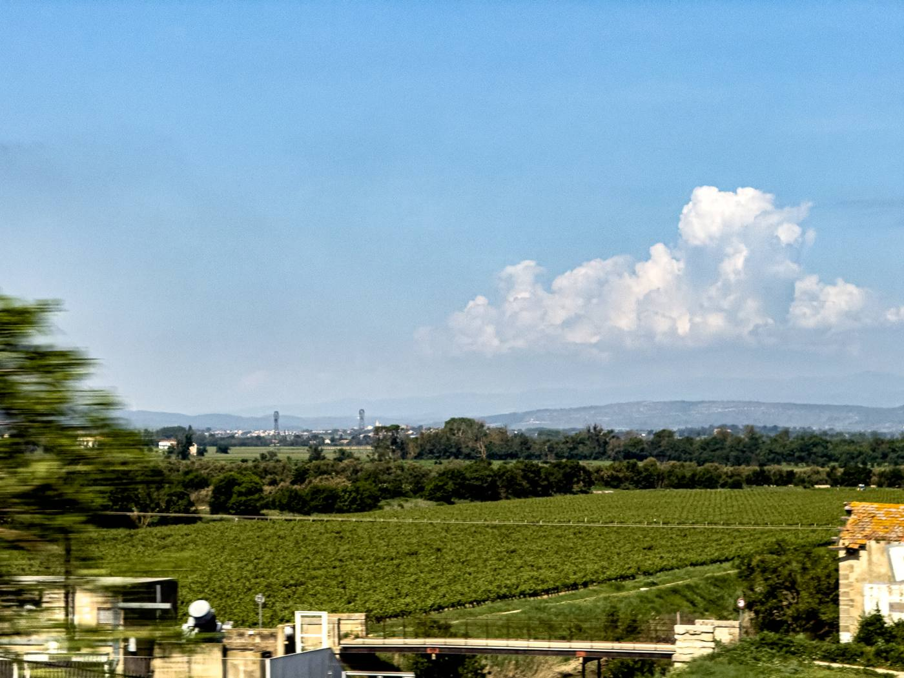

pinframe
train clouds · 57 photos
1Points
2Fix
3Export
Hold one thing still
Drop a folder of photos. Click points on the cloud, the mountain, the moon, whatever should stay put. Everything else moves around it.
or try the train clouds clouds sample · 57 photos from a train
Photos play in filename order · AVIF, HEIC, JPEG, PNG
